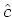
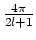
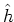

Fast spherical convolution
out = convsph(data, filter)
This mex file computes a fast spherical convolution of spherical data data with the zonal filter filter using the classical spherical convolution theorem
(l, m) = (l, m)(l, 0)
with the spherical transform of c = fh, and the spherical transform respectively of f (the data) and h (the zonal filter).
To perform this spherical convolution, convsph program uses the C functions of the (GPL) SpharmonicKit [1] based on the work of Driscoll, Healy and Rockmore [2] about fast spherical transforms.
Notice that B must be a power of 2.
>> load world2; figure; yashow(mat, 'spheric'); >> [phi,theta] = sphgrid(size(mat,1)); >> filter = exp(-(tan(theta/2)/0.05).^2); >> out = convsph(double(mat), filter); >> figure; yashow(out, 'spheric', 'mode','real'); colorbar;
[1] SpharmonicKit: http://www.cs.dartmouth.edu/ geelong/sphere/. Developed by Sean Moore, Dennis Healy, Dan Rockmore, Peter Kostelec.
[2] D. Healy Jr., D. Rockmore, P. Kostelec and S. Moore, "FFTs for the 2-Sphere - Improvements and Variations", Journal of Fourier Analysis and Applications, 9:4 (2003), pp. 341 - 385.
fst, fzt, ifst, ifst, ilmshape, ilmshape, lmshape